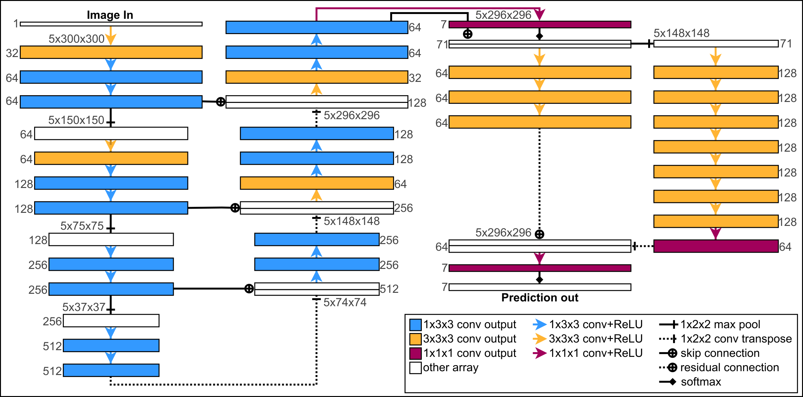
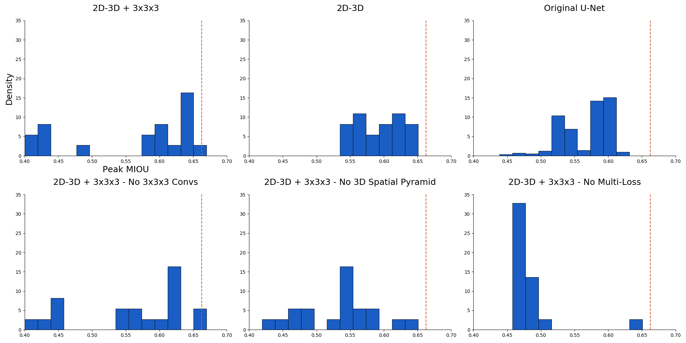

Job Talk -
Moichor
Matthew Guay
matthew.guay@nih.gov
matt.d.guay@gmail.com
https://heyitsguay.github.io/moichor/
### About me - **Matthew Guay**. Bioinformatics scientist in applied computer vision at the National Institutes of Health. - Working to improve 3D semantic and instance segmentation of cells: more accurate, more robust, across larger scales, with more detail. - Background in applied math, scientific computing, image processing, and computer vision.
### Undergraduate education - Cornell 2011, B.A. Mathematics, _magna cum laude_. Thesis: _Infinity-harmonic functions on SG_. <a href="https://heyitsguay.github.io/undergradthesis.pdf" target="_blank">[Paper]</a>. <a href="https://heyitsguay.github.io/undergradpresentation.pdf" target="_blank">[Presentation]</a>. <img src="img/undergrad.gif" alt="Numerical solutions to a fractal PDE">
### Graduate education - UMD 2016, Ph.D. AMSC. Thesis on sparse signal processing in digital and biological systems: <a href="https://heyitsguay.github.io/gradthesis.pdf" target="_blank">[Paper]</a>. <a href="https://heyitsguay.github.io/gradpresentation.pdf" target="_blank">[Presentation]</a>. <img src="img/gradsmall.gif" alt="Compressed sensing image reconstruction vs. weighted backprojection">
### Work at NIH - Leading a new, small AI research team with <a href="https://www.nibib.nih.gov/labs-at-nibib/laboratory-cellular-imaging-and-macromolecular-biophysics-lcimb" target="_blank">LCIMB</a>. - Latest paper: <a href="https://leapmanlab.github.io/dense-cell/" target="_blank">Dense cellular segmentation for EM using 2D-3D neural network ensembles</a> <img src="img/semantic_overview.png" alt="Compressed sensing image reconstruction vs. weighted backprojection">
### Work at NIH - **Current research**: Better 3D instance segmentation, multi-tissue transfer learning, self-supervised pretraining. - **Current development**: Integrating algorithmic and manual labeling for rapid structural modeling of COVID-19 platelet samples.
<img width="80%" height="50%" data-src="img/covid_demo.png" alt="Blood clot from a COVID-19 patient">
### Work at NIH - Co-founded <a href="https://ncihub.org/groups/nihai" target="_blank">NIH.AI</a>, the trans-NIH forum for AI discussion. - Spread knowledge of AI techniques to biologists and best practices to technical specialists. - Consulting with groups at the NIH and UMD on starting new computer vision R&D projects.
### Work at NIH - Example talk 1: <a href="https://leapmanlab.github.io/nihai/jan20/" target="_blank">Content-aware Computation for Optical Microscopy</a> - Example talk 2: <a href="https://heyitsguay.github.io/talks/fars1120/" target="_blank">Putting Deep Learning to Work for EM</a>
### Career interests - Solving computer vision challenges that translate into material impact for interesting biomedical applications. - The research problems: accuracy, robustness, generalization. - The development problems: Infrastructure for rapid experimentation, model analysis, and deployment. - **Moichor** sounds like a great place to work on these things.
### Questions for me? - Want more details on anything? - I can follow linked works, or do a technical dive into my latest paper.
### Dense Cellular Segmentation - _Dense cellular segmentation for EM using 2D-3D neural network ensembles_, Guay et al., 2021. - Full paper: [Link](https://rdcu.be/ceYzq) - **Main idea**: Hybrid 2D-3D convolutional networks offer superior semantic segmentation performance than 2D-only or 3D-only architectures for platelet SBF-SEM analysis.
### Background - Worked with LCIMB in grad school on compressed sensing, but image denoising was not a significant bottleneck. - Bigger problem: **segmentation**. Modern electron microscopes (SBF-SEM, FIB-SEM) rapidly create gigavoxel datasets. - Biologists want structural analysis of <i>everything</i>, but tracing structures by hand is tedious, does not scale.
<img src="img/platelet-sample2.png" alt="Platelet dataset sample">
### Goal - **Automate semantic segmentation** for LCIMB platelet datasets. - LCIMB had manually-labeled images with six classes - cell material and five organelles. - Can a segmentation algorithm produce usable results for scientific research?
### Challenges - **3D context**: Necessary for humans. Can I build an algorithm that uses it to do better than 2D segmentation algorithms? - **Architecture design**: When comparing neural net architectures, how to properly decide when one is better? - **Edge preservation**: Biological structures are complicated and densely packed. How to avoid merging together of nearby structures?
### Solutions - 3D Context - **Establish baselines**. I trained existing 2D U-Net and Deeplab architectures on our segmentation problem, as well as 3D U-Net variants. - Large fully-3D nets require more memory than 2D nets with similar fields of view, causes hardware issues. - Using unpadded convolutions like the original U-Net requires inputs with large z dimension, which is impractical.
### Solutions - 3D Context - Conversations at a conference led to an interest in **hybrid 2D-3D** architectures. - Idea: Use a large memory-friendly 2D module and a smaller 3D module. - Initially saw sequence methods used for 3D, but can also be done with fully-convolutional architectures. - Both modules can be placed in one computation graph and trained end-to-end.
### Solutions - 3D Context - Final architecture: (mostly) 2D U-Net + 3D spatial pooling pyramid. - 2D U-Net has conv block-initial 3x3x3 convs. - 2D module makes intermediate segmentation predictions which are included in the training loss.
### Solutions - 3D Context 
### Solutions - 3D Context <img src="img/loss.png" alt="Training loss equation"> Full training loss objective.
### Solutions - Architecture Design - I had to explore new neural net architectures. How do I decide when one is better than another? - Basic: Ablation study for proposed new features. - **Bigger problem**: Initialization-dependent performance. - Random weight initialization induces random distribution of final performance metrics on validation data.
### Solutions - Architecture Design - **Solution**: Controlled training of multiple instances per architecture. - Vary only the random seed responsible for weight initialization, create empirical validation performance distributions. - Bonus: When the procedure creates several high-performing instances, they can be ensembled for an overall performance bump.
### Solutions - Architecture Design  Empirical validation MIoU histograms
### Solutions - Edge Preservation - **Problem**: How to keep, e.g., nearby cells from being merged together by a segmentation algorithm. - Original U-Net paper uses a weighted loss function that penalizes errors in regions where two cells come close to touching. - Building required knowing which region is cell 1, cell 2, etc. - I wanted to do the same with just voxel-level data.
### Solutions - Edge Preservation - **Solution**: Build an error weighting array from three parts. - Weight floor: minimum weight value for each voxel. - Class balancing: Weight each voxel inversely proportionally to its correct class' frequency. - Edge preserving: Use thresholded, scaled diffusion operations to upweight regions where structures almost touch and small cross-sections.
### Solutions - Edge Preservation <img src="img/weights.png" alt="Weight array construction description"> Error weight array construction
### Results - Final network ensemble tested on multiple datasets including two different physical samples. - Performance compared with human annotators on downstream analysis tasks in addition to standard metrics (MIoU). - Result is nearing human performance, regarded as a viable proof of concept for our institute.
**Thank you Moichor!!**